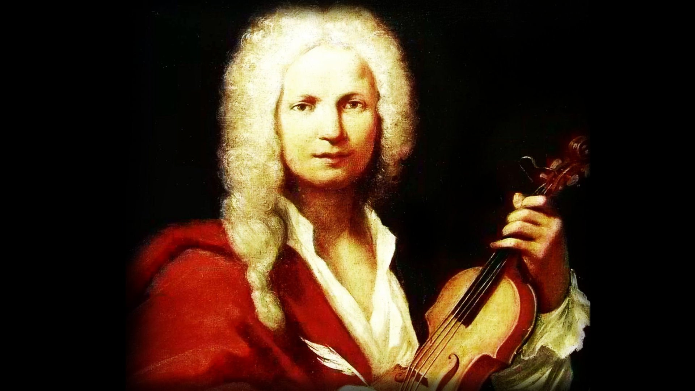

Antonio Vivaldi fue un compositor, violinista y sacerdote italiano del siglo XVIII. Nacido en Venecia en 1678, se convirtió en uno de los compositores más importantes del Barroco tardío y es conocido por sus conciertos para violín, sus óperas y su música sacra. Vivaldi comenzó a estudiar violín desde muy joven y se convirtió en un virtuoso del instrumento. Después de ordenarse como sacerdote, comenzó a trabajar como maestro de música en un orfanato para niñas en Venecia. Allí compuso gran cantidad de obras religiosas y enseñó música a las niñas.
A lo largo de su carrera, Vivaldi compuso más de 500 conciertos para violín, cientos de sonatas y óperas, y muchas otras obras. Sus conciertos para violín son especialmente famosos por su brillantez técnica y su belleza melódica. También compuso una gran cantidad de música sacra, incluyendo misas, motetes y oratorios. Vivaldi tuvo una gran influencia en la música barroca tardía y fue muy admirado por sus contemporáneos. Sin embargo, después de su muerte en 1741, su obra cayó en el olvido durante casi dos siglos. Fue redescubierto en el siglo XX por músicos e intérpretes que reconocieron su importancia y comenzaron a interpretar sus obras con frecuencia.
Hoy en día, la música de Vivaldi es muy popular entre los amantes de la música clásica y es interpretada regularmente por orquestas de todo el mundo. Sus conciertos para violín son especialmente populares y se han utilizado en muchas películas, programas de televisión y otros medios.
Los cuatro conciertos que escribió Antonio Vivaldi y que conocemos hoy con el título de Las Cuatro Estaciones, están escritos originalmente para violín, orquesta y declamador, pero muy raras veces los sonetos, que según algunos autores creó el propio Vivaldi, se escuchan en las salas de conciertos.
Varias veces he dicho aquí de la música como lenguaje o discurso, que expresa ideas pero que no tiene traducción al lenguaje verbal, lo que es motivo de desesperación para aquellos que quieren «entender» la música.
Pero también he dicho que existe la música programática, aquella que acerca a los dioses de la música a los humanos, la que nos otorga el código que descifra las ideas, la magia que las traduce, la clave del entendimiento. La música de programa es moderna y tuvo un auge importante durante el periodo romántico, pero existen antecedentes notables desde el periodo barroco con Antonio Vivaldi, en particular con sus cuatro conciertos para violín, cuerdas y continuo que conforman Las estaciones.
Vivaldi vertió sus ideas en música casi traduciendo unos sonetos que, con los nombres de las cuatro estaciones, había escrito. De leerlos, queda claro que el lenguaje musical de Vivaldi era muy superior a su lenguaje poético, pero es una experiencia interesante escuchar Las estaciones cuando se han conocido los sonetos. Se los recomiendo y me permito reproducirlos en traducción de Ángel Crespo.
Esta es la versión al español de los sonetos, originales en italiano:
Llegó la primavera, y los rientes pájaros la saludan con su canto.
Bajo el soplo del céfiro, las fuentes con dulce son discurren entretanto.
Cubren el aire con su negro manto, nuncios electos, trueno y rayo ardientes.
Callados éstos, las aves silentes tornan de nuevo a su canoro encanto.
Y así, sobre el florido ameno prado, al caro murmurar de la arboleda duerme el cabrero con su can al lado.
Pastor y ninfas, en la choza amada, danzan al son de la zampoña leda en esta Primavera iluminada.
Bajo dura estación que el sol enciende -mustios hombre y rebaño-, arde el pino.
Suelta el cuco la voz; cuando la entienden, la torcaz canta y da el jilguero un trino Céfiro dulce sopla, mas la emprende Bóreas, sin tardar, con su vecino. Llora el zagal, pues temeroso atiende una fiera borrasca y su destino.
Roba a sus miembros laxos el reposo del relámpago el miedo, y truenos fieros y de las moscas el tropel furioso. ¡Ah, que son sus temores verdaderos! Truena y fulmina el cielo y, granizoso, desmocha los trigales altaneros.
EI rústico, con bailes y con cantos, celebra la vendimia y su alborozo del licor de Baco encendidos tantos terminan en el ensueño su gozo.
Se entregan a los bailes y los cantos, al aire que, templado, da alborozo, a la estación, que está invitando a tantos de un dulcísimo sueño al bello gozo.
Cazadores al alba van saliendo con cuernos, escopetas y jaurías.
Huye la fiera, mas la van siguiendo; pasmada y laxa por la algarabía de escopetas y perros, va muriendo herida, y amenaza todavía.
Entre la nieve, tiritar helado al severo soplo de hórrido viento, correr, siempre los pies en movimiento castañear cuando el hielo es extremado.
Los días quietos, ir del fuego al lado mientras fuera la lluvia moja a ciento; caminar sobre el hielo a paso lento; por temor de caer, ser avisado.
Ir firme, resbalar, caerse al suelo, levantarse, corriendo presuroso sin que se rompa y resquebraje el hielo. Sentir que del cerrado calabozo Bóreas, Siroco y todos alzan vuelo. Esto es Invierno, pero traiga gozo.
Pulsa este boton para volver atras: